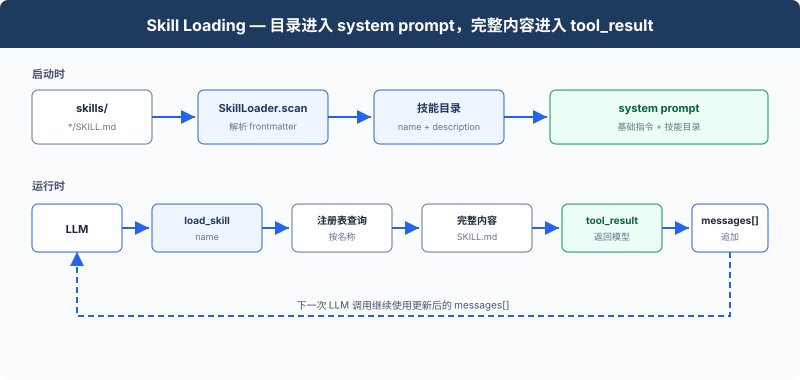

s07: Skill Loading — 用到时再加载
s01 → s02 → s03 → s04 → s05 → s06 → s07 → s08 → s09 → ... → s16 → s17
system prompt 保存技能目录；
load_skill返回完整的SKILL.md。Harness 层：知识加载 — 让模型先知道有哪些技能，再按名称读取内容。
问题
假设某个项目有一套 React 组件规范、一份 SQL 风格指南和一份 API 设计文档。我们希望 Agent 在开发过程中遵守这些规范，最直接的做法就是把它们全部放进 system prompt：
SYSTEM = (
f"You are a coding agent. "
+ open("docs/react-style.md").read()
+ open("docs/sql-style.md").read()
+ open("docs/api-design.md").read()
)
这种做法能让 Agent 读到所有规范，但问题在于，三份文档被固定放进了 system prompt，无法根据当前任务只选择需要的那一份。每次调用 LLM 时，三份文档的全文都会一起发送给模型。当前任务只修改 React 组件时，实际需要的只有 React 组件规范；SQL 风格指南和 API 设计文档与任务无关，却仍然占用输入 token 和上下文窗口，留给代码、对话和工具结果的空间也会变少。
解决方案

启动时，SkillLoader 扫描 skills/*/SKILL.md，读取 YAML frontmatter 中的 name 和 description，并把这份目录加入 system prompt。模型需要完整说明时，调用 load_skill(name)；返回的 SKILL.md 作为 tool_result 追加到消息列表。
| 内容 | 进入模型的位置 | 何时加入 |
|---|---|---|
| 技能名称和描述 | system prompt | 启动时 |
完整 SKILL.md |
tool_result |
调用 load_skill 时 |
工作原理
每个技能是一个包含 SKILL.md 的目录：
skills/
agent-builder/SKILL.md
code-review/SKILL.md
mcp-builder/SKILL.md
pdf/SKILL.md
扫描技能
class SkillLoader:
def scan(self):
self.skills.clear()
skills_root = self.skills_dir.resolve()
for manifest in sorted(self.skills_dir.glob("*/SKILL.md")):
if (not manifest.is_file()
or not manifest.resolve().is_relative_to(skills_root)):
continue
content = manifest.read_text(encoding="utf-8")
metadata, body = self.parse_frontmatter(content)
raw_name = metadata.get("name")
name = raw_name.strip() if isinstance(raw_name, str) else ""
name = name or manifest.parent.name
raw_description = metadata.get("description")
description = (raw_description.strip()
if isinstance(raw_description, str) else "")
description = description or body.split("\n", 1)[0]
description = " ".join(str(description).lstrip("# ").split())
self.skills[name] = {
"name": name,
"description": description,
"content": content,
}
catalog() 只输出名称和描述：
- code-review: Perform thorough code reviews...
- pdf: Process PDF files...
组装 system prompt
ENVIRONMENT_PROMPT = (
"Windows: the bash tool runs through cmd.exe; use cmd.exe syntax, not Unix "
"Bash or PowerShell syntax, and prefer dedicated file tools for file operations"
if os.name == "nt"
else "Unix-like: the bash tool runs the system shell"
)
def build_system_prompt() -> str:
return (
f"You are a coding agent at {WORKDIR}. Environment: {ENVIRONMENT_PROMPT}. "
"Use tools to solve tasks. "
"Act, don't explain.\n\n"
f"Skills available:\n{SKILL_LOADER.catalog()}\n\n"
"Use load_skill to read the full instructions when a skill applies."
)
固定的 Agent 指令和扫描得到的技能目录在这里组成实际传给模型的 system prompt。
加载完整内容
def load(self, name: str) -> str:
skill = self.skills.get(name)
if skill:
return skill["content"]
available = ", ".join(self.skills) or "none"
return f"Error: Unknown skill '{name}'. Available: {available}"
name 用于查询启动时建立的注册表，不会被当作文件路径。工具返回后，原有 Agent Loop 会把内容作为新的 tool_result 消息追加。
试一下
cd learn-claude-code
python s07_skill_loading/code.py
试试这些 prompt：
What skills are available?Load the code-review skill and follow its instructionsReview README.md and load the relevant skill first
观察 system prompt 中是否只有技能目录，以及调用 load_skill 后是否出现完整的 SKILL.md 内容。
接下来
随着工具调用增加，messages[] 会积累较早的文件内容和工具结果。
s08 Context Compact → 缩短较早的消息，为后续调用保留上下文空间。